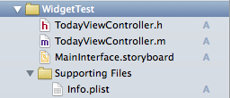
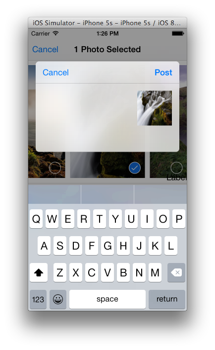

Author: Charles Zhu
Summary: ios8 app extension
1 开始
上一篇介绍了Extension的基本概念，Extension的运行周期，和containing app的数据共享等细节，这节开始实践。需要说明的本文不会覆盖所有类型，比如Finder Sync类型是OS X独有的，这里会一带而过。
2 Widget
Widget就是Today extension，这个大家比较熟悉：下拉通知中显示的股票信息就是一个widget。从这里我们也可以看出widget的特点：
- 可以自定义UI
- 必定和containing app有着数据共享
2.1 widget 工程模版
在已有工程中新建一个target，选择Application Extension中的Today Extension，这时工程中增加了如下文件：

先来看Info.plist，主要增加了NSExtenstion的key，内容如下：
<key>NSExtension</key>
<dict>
<key>NSExtensionMainStoryboard</key>
<string>MainInterface</string>
<key>NSExtensionPointIdentifier</key>
<string>com.apple.widget-extension</string>
</dict>
和app一样，如果不需要使用默认提供的sb文件，那么可以删除NSExtensionMainStoryboard属性，然后添加NSExtensionPrincipalClass。
上面说过widget必定会和containing app进行数据交互，那么我们必须同时开启containing app和widget的App Groups功能。打开的方式：选中target->Capabilities->App Groups。 当你开启后，Xcode6会联网帮你进行一些操作，然后你需要做的就是给App Groups取一个名字，这个名字必须以group开头，建议后面的部分还是用反域名的结构。注意containing和widget的group名字得是一样的，不然就不能进行数据的共享。
接下来，我们看TodayViewController，这是UIViewController的子类，同时实现了NCWidgetProviding协议。它的实现文件模版中有3个方法：
-(void)viewDidLoad {
[super viewDidLoad];
// Do any additional setup after loading the view from its nib.
}
-(void)didReceiveMemoryWarning {
[super didReceiveMemoryWarning];
// Dispose of any resources that can be recreated.
}
-(void)widgetPerformUpdateWithCompletionHandler:(void (^)(NCUpdateResult))completionHandler {
// Perform any setup necessary in order to update the view.
// If an error is encountered, use NCUpdateResultFailed
// If there's no update required, use NCUpdateResultNoData
// If there's an update, use NCUpdateResultNewData
completionHandler(NCUpdateResultNewData);
}
其中最后一个就是NCWidgetProviding协议，该协议的作用：
- 在通知中心可见或者在后台的情况下，系统会在合适的时候更新widget
completionHandler必须要执行，同时根据运行情况选择合适的NCUpdateResult作为参数
此外，文档中还说系统会不时的对widget进行截屏，这样当widget可见的时候，widget会将最近的截屏先显示出来，然后再用最新的实时的view替换。从这个意义上说，对于股票类的widget适时的刷新页面就很有必要。
另外，NCWidgetProviding协议还包括：
- (UIEdgeInsets)widgetMarginInsetsForProposedMarginInsets:(UIEdgeInsets)defaultMarginInsets;
可以让你自由选择widget四周对齐处的间距。
2.2 widget的设计
可以在sb文件中设计你的widget页面，作为一个简单的演示，我们设计一个直接显示文字的widget。你可以在containing app中设计一个UITextField，把输入保存到share group中。然后在widget中读取，并显示在UILabel中。核心的读写操作一并演示如下：
NSUserDefaults *mySharedDefaults = [[NSUserDefaults alloc]
initWithSuiteName:@"group.xxxxxx"];
[mySharedDefaults setObject:[self.detailItem description] forKey:@"nameKey"];
NSString *text = [mySharedDefaults objectForKey:@"nameKey"];
self.label.text = text;
苹果建议widget的UI不要使用scrollview，因为所有的widget都是在一个scrollview中，嵌套使用scrollview有多大的不爽想必可想而知，所以尺寸大小需要变化的就直接通过view的大小来实现。当然，如果是横向的scrollview会好一点，不过也建议不要放置太多的内容。因为widget本身就包含着信息一目了然，如果需要用户进行操作，就会拖累widget的体验
2.3 widget的显示
有时候，当没有可用数据的时候，我们可以控制widget是否显示：
[[NCWidgetController widgetController] setHasContent:NO forWidgetWithBundleIdentifier:@"com.XXXXXX"];
这样就能隐藏widget而不显示。
2.4 打开contaning app
使用URL scheme，首先需要在containing中定义一个scheme，例如: extest，然后在widget中使用extensionContext属性打开
[self.extensionContext openURL:[NSURL URLWithString:@"extest://"]
completionHandler:^(BOOL success) {
}];
2.5 编辑
OS X上支持widget的编辑，iOS上不支持
3 Share
Share侧重内容的分享，那么可以猜测有两点需要关注：
- 分享类型/内容如何确定
- 分享任务的实现
3.1 Share 模版文件
Share extension的添加和widget类似，添加后还是先打开info.plist文件，如何添加如下的属性：
<key>NSExtensionActivationRule</key>
<dict>
<key>NSExtensionActivationSupportsImageWithMaxCount</key>
<integer>1</integer>
<key>NSExtensionActivationSupportsMovieWithMaxCount</key>
<integer>1</integer>
<key>NSExtensionActivationSupportsWebURLWithMaxCount</key>
<integer>1</integer>
</dict>
这样的话，Share就可以支持图片/视频/URL，后面的数字代表可以支持的数目。
3.2 发送内容
完成了上述步骤后，我们安装这个action，并用Photos应用打开该action: 
如图所示，Share extension会弹出一个对话框视图，视图上有文字输入的地方和Post/Cancel的按钮。回到工程可以发现Share的视图父类是SLComposeServiceViewController，它定义了一系列方法让子类去重载。重要的而且通常需要实现的一些方法已经定义在模版里，我们逐个来看一下。
首先第一个就是isContentValid，该方法是用于检查用户输入的有效性(主要指输入字符长度检查)，典型的实现：
-(BOOL)isContentValid {
// Do validation of contentText and/or NSExtensionContext attachments here
if ([self.contentText length])
{
NSInteger messageLength = [[self.contentText
stringByTrimmingCharactersInSet:[NSCharacterSet whitespaceCharacterSet]] length];
NSInteger charactersRemaining = 100 - messageLength;
self.charactersRemaining = @(charactersRemaining);
if (charactersRemaining >= 0) {
return YES;
}
return NO;
}
else
{
return YES;
}
return NO;
}
接下来就是didSelectPost，这是点击Post调用的方法，典型实现：
- (void)didSelectPost
{
// Perform the post operation.
// When the operation is complete (probably asynchronously), the Share extension should notify the success or failure, as well as the items that were actually shared.
NSExtensionItem *inputItem = self.extensionContext.inputItems.firstObject;
NSExtensionItem *outputItem = [inputItem copy];
outputItem.attributedContentText = [[NSAttributedString alloc]
initWithString:self.contentText attributes:nil];
// Complete this implementation by setting the appropriate value on the output item.
NSArray *outputItems = @[outputItem];
[self.extensionContext completeRequestReturningItems:outputItems
expirationHandler:nil completion:nil];
// Or call [super didSelectPost] to use the superclass's default completion behavior.
}
这个方法里要做几件事：
- 上传任务：使用
NSURLSession把图片(或其他媒体)和文字存储到服务器 - 调用
completeRequestReturningItems:myOutputItems expirationHandler:nil completion:nil通知host app完成了上传请求 - 准备好随时被系统终止
接下来是configurationItems，该方法是返回一个SLComposeSheetConfigurationItem对象的数组。如果实现了该方法，那么弹出的UI的最下方会出现该方法定义的item。 SLComposeSheetConfigurationItem的属性title出现在左侧，属性value出现在右侧，点击后弹出配置窗口。
最后是presentationAnimationDidFinish，该方法是Share页面弹出动画结束后执行，苹果建议一些耗费重的工作在这里进行。我建议可以在这里准备好要上传的一些数据，比如获取图片数据，例如：
- (void)presentationAnimationDidFinish
{
NSExtensionItem *inputItem = self.extensionContext.inputItems.firstObject;
NSExtensionItem *outputItem = [inputItem copy];
for (NSItemProvider *provider in outputItem.attachments)
{
NSLog(@"%@", [provider registeredTypeIdentifiers]);
if ([provider hasItemConformingToTypeIdentifier:(NSString *)kUTTypeImage])
{
[provider loadItemForTypeIdentifier:(NSString *)kUTTypeImage options:nil completionHandler:^(id<NSSecureCoding> item, NSError *error) {
if (error) {
}
else
{
if ([(NSObject *)item isKindOfClass:[NSURL class]])
{
NSLog(@"NSURL: %@", (NSURL *)item);
dispatch_async(dispatch_get_main_queue(), ^{
self.imgURL = (NSURL *)item;
});
}
else
{
//other handling
}
}
}];
}
}
}
Share的内容基本全部覆盖了，觉得不能满足定制需求的可以去头文件查看还有哪些方法没有实现。如果没有找到，那么很大程度就是你的Share extension设计有问题了。
如果Share extension的运作和实现理解了，下面的Action，PhotoEditing会更容易理解，因为后两者的实现流程和Share非常类似。
4 Action
Action可以获得host app提供的可视数据，如何直接或者经过修改后使用，并把最终修改的数据交还给containing app。 在iOS中，Action Extension：
- 帮助用户以另一种方式查看当前的文档
- extension总是在action sheet或全屏的模态视图中出现
- 当且仅当host app允许，Action extension才会收到选中的内容
和Share一样，Action也只能位于系统的UI中，如果某个host app可用某个extension并且host app实现了UIActivityController，否则将不能调用extension。
4.1 Action模版文件
新建一个Action对象后，我们还是先看plist文件：
<key>NSExtension</key>
<dict>
<key>NSExtensionAttributes</key>
<dict>
<key>NSExtensionActivationRule</key>
<string>TRUEPREDICATE</string>
</dict>
<key>NSExtensionMainStoryboard</key>
<string>MainInterface</string>
<key>NSExtensionPointIdentifier</key>
<string>com.apple.ui-services</string>
</dict>
默认的plist文件还是不够完备的，需要自己添加，比如:
<key>NSExtension</key>
<dict>
<key>NSExtensionActionWantsFullScreenPresentation</key>
<false/>
<key>NSExtensionAttributes</key>
<dict>
<key>NSExtensionActivationRule</key>
<dict>
<key>NSExtensionActivationSupportsImageWithMaxCount</key>
<integer>1</integer>
<key>NSExtensionActivationSupportsMovieWithMaxCount</key>
<integer>1</integer>
<key>NSExtensionActivationSupportsWebURLWithMaxCount</key>
<integer>1</integer>
</dict>
<key>NSExtensionServiceRoleType</key>
<string>NSExtensionServiceRoleTypeViewer</string>
</dict>
<key>NSExtensionMainStoryboard</key>
<string>MainInterface</string>
<key>NSExtensionPointIdentifier</key>
<string>com.apple.ui-services</string>
</dict>
其中，NSExtensionActionWantsFullScreenPresentation指定Action是否需要全屏显示，而NSExtensionServiceRoleType则有2种取值：
NSExtensionServiceRoleTypeEditor: 可以编辑或转换文档，并将修改过的文档回传给host app
NSExtensionServiceRoleTypeViewer: 将选中的文档以另一种形式打开浏览
需要说明的是，文档中说明了NSExtensionServiceRoleType是OS X上才有的。
4.2 Action UI设计
UI的设计和具体的应用有关，限制较少，唯一需要注意的是Action需要提供一个类似app icon的图片，以便在UIactivityController中显示。图片的要求：
- 带有适度透明的黑或白底
- 不要有阴影
- 图片要抗锯齿
- 尺寸：60x60 iphone；76x76 ipad
4.3 内容回传
主要实现done，如：
-(IBAction)done {
// Return any edited content to the host app.
NSExtensionItem *outputItem = [[NSExtensionItem alloc] init];
outputItem.attributedContentText = self.myTextView.attributedString;
NSArray *outputItems = @[outputItem];
[self.extensionContext completeRequestReturningItems:outputItems];
}
5 Photo Editing
Photo Editing和Action很类似，唯一的区别就是Photo Editing的host只能是Photos app。它的启动方式是：Photos->单个图片浏览->编辑->左上角按钮。经过Photo Editing处理的图片会返回给Photos，用户可以选择接受或取消该改变。
5.1 Photo Editing如何运行
Photos会保存多个版本的asset数据：原始的数据，历次做过修改的数据(比如添加的滤镜参数)，以及现有含修改的数据。当启用Photo Editing，Photos会问extension能否读懂修改数据，如果可以读懂Photos会把原始数据作为输入传递给extension，再把修改数据传递给extension。这样，extension可以使用修改数据(比如修改滤镜参数)或者直接添加新的编辑。
如果extension不支持修改的数据，那么Photos就会把当前的数据作为输入传递给extension，这样extension只能添加新的便捷了。
5.2 模版文件
plist文件新加PHSupportedMediaTypes的key，它的值是 Image或Video。
而查看实现文件可以发现视图控制器实现了PHContentEditingController协议，该协议的代理方法都是required，方法的说明见下：
//extension能否处理编辑的数据
- (BOOL)canHandleAdjustmentData:(PHAdjustmentData *)adjustmentData;
//contentEditingInput是原始输入数据，placeholderImage则是现在版本的数据
- (void)startContentEditingWithInput:(PHContentEditingInput *)contentEditingInput placeholderImage:(UIImage *)placeholderImage;
//编辑完成后调用，注意要调用completionHandler来通知host app编辑完成
- (void)finishContentEditingWithCompletionHandler:(void (^)(PHContentEditingOutput *))completionHandler;
5.3 sample
官方有一个例子:samplephotoeditingextension，可以去看看。
Bingo
以上介绍了widget， Share，Action和Photo Editing，剩下后文继续。